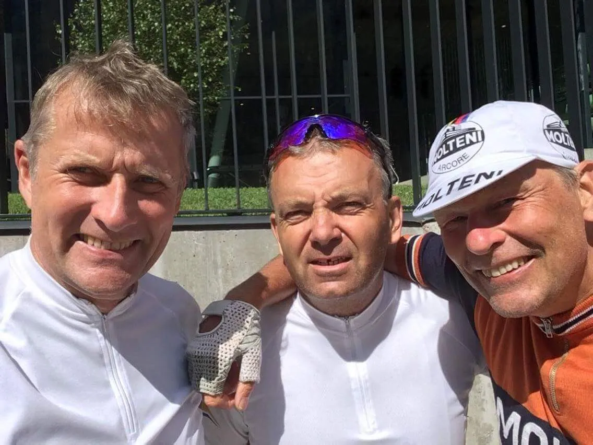
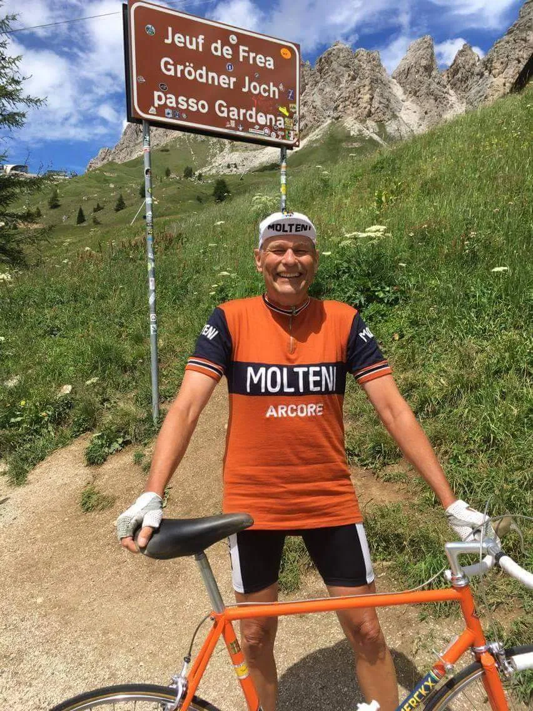

Molteni Rytter vandbærer for to jyske gentlemen

Tre mænd, fire bjerge. Det var opskriften idag i de sydtirolske Dollomitter.
62 kilometer lyder ikke af meget, men når de tilbagelægges på den berømte Ronde de Sella med udgangspunkt i vintersportsbyen Canazei i Dollomitterne, er det med nogle flere højdemeter end en tilsvarende distance i Danmark.
– De eneste meter på flad vej var de 346 meter på parkeringspladsen fra bilen og hen til rundkørslen” udtaler Carsten Jakobsen og fortsætter: Til lyden af Hansi Hinterseer, som buldrede ud af højttalerne fra café Am Rathaus, ramte vi stigningen op mod Passo Stella og efter 9 km rundede vi toppen i 2240 m.o.h.”

Efter Sella fulgte Passo Gardena i 2136 m.o.h og Passo di Campolongo i 1875 m.o.h.
I den lille bjergby Arabba for foden af dagens sidste stigning Passo Podoi, måtte Squadra Molteni’s udsendte række sine to, efterhånden noget brugte følgesvende en hånd.
– Jeg kunne fornemme på dem, at de var i krise. De kører på plastik og i lycra, og det går jo ikke i længden, fortæller Carsten på den direkte satellitforbindelse fra Alto Aldige.
– Før start havde jeg vist dem, hvordan jeg hældte Weihrenstephaner Weisbier i min cykelflaske, men de insisterende på et eller andet nymodens elektrolyt-stads, hvilket selvfølgelig resulterede i at de gik håbløst kolde inden det sidste bjerg, forklarer Carsten.
Som ansvarlig Moltenirytter handlede Carsten resolut og hurtigt. Omgående skaffede han vand i rigelige mængder til de to tørstige ryttere inden opstigningen.
Desværre var der ikke øl under nogen former at skaffe så hurtigt, men vand var dog bedre end ingenting i den akutte situation.Lyder det inden forbindelsen bliver afbrudt af en tyroler i lederhosen, som skråler med på ” Ohh meine herliche berge………”

Molteni’s HQ forventer snarlig opdatering fra Südtirol…